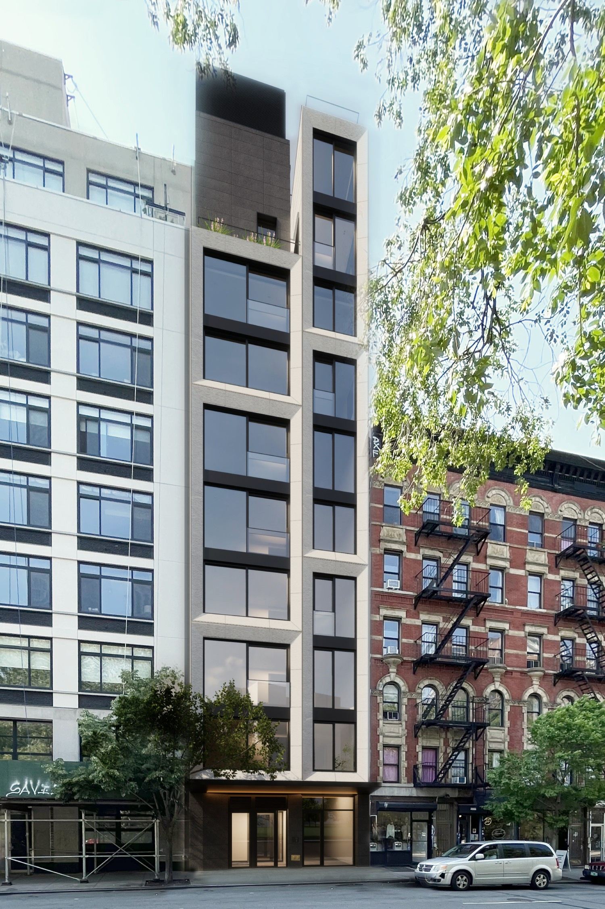
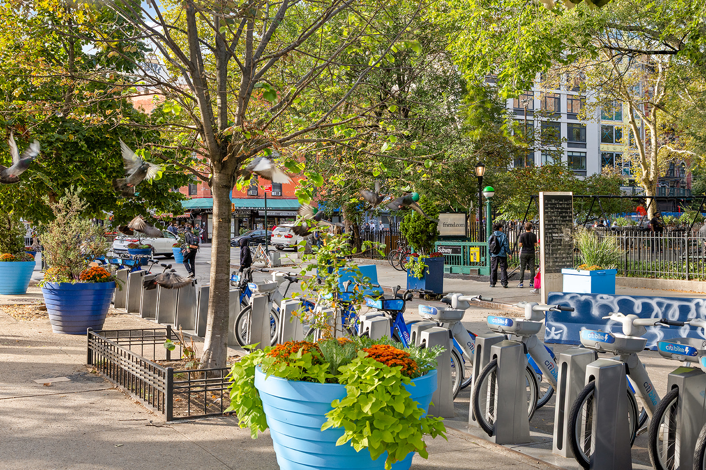
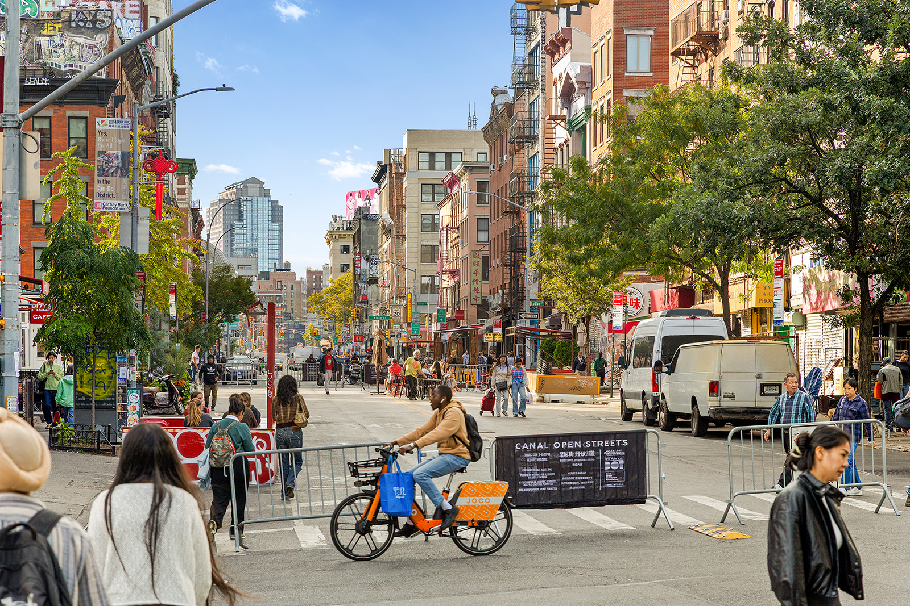
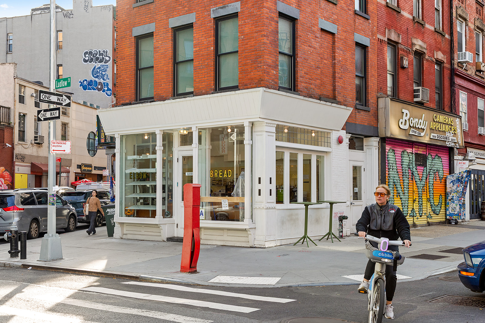
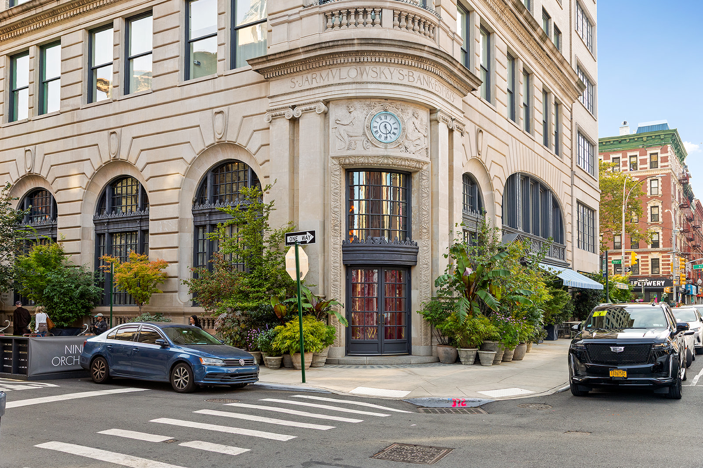
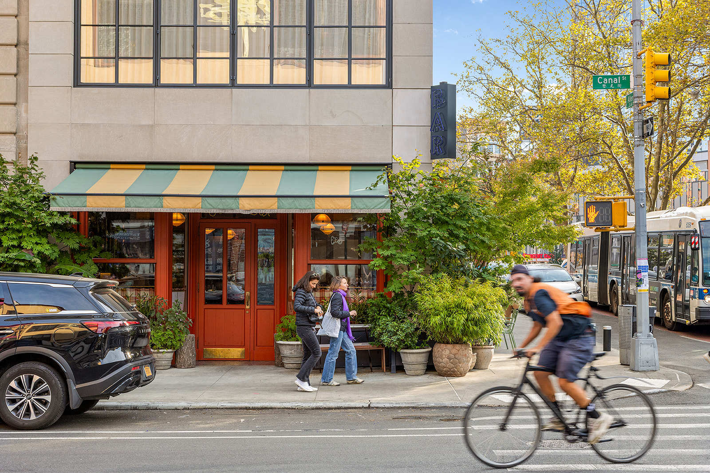
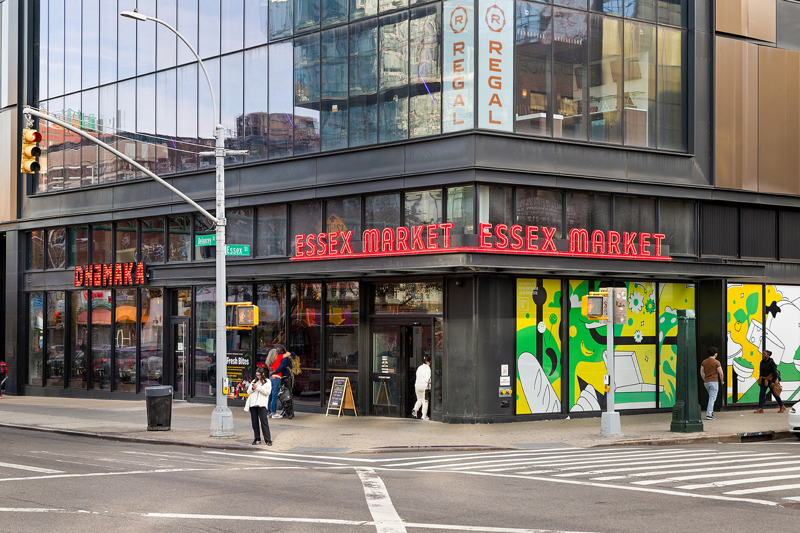

The space



This thoughtfully designed residence offers a refined take on Lower East Side living within a newly constructed building.
The home is anchored by a bright, open layout that balances modern comfort with understated elegance, ideal for both everyday living and entertaining. The kitchen is outfitted with all-new, premium appliances and clean, contemporary finishes, seamlessly connecting to the main living space. Each unit is equipped with its own washer and dryer. Both bedrooms are generously proportioned, offering privacy and flexibility for a variety of lifestyles. A rare highlight is the private outdoor space, providing a quiet extension of the home with open views over a nearby park—perfect for morning coffee or unwinding at the end of the day. Adding to the sense of exclusivity, the elevator opens directly into the residence, creating a private and seamless arrival experience.
Just outside your door, the neighborhood unfolds effortlessly. Acclaimed restaurants sit beside long-standing local favorites, while intimate cocktail bars and music venues give the area its unmistakable energy. Independent artist shops, studios, and galleries line the surrounding streets, offering a constantly evolving cultural backdrop that feels authentic rather than curated. The area offers excellent subway access via the F, J, and M lines and easy walking connections to SoHo, Nolita, Chinatown, and the East Village. Essex Street is easily accessible and rich in character.
The area around Essex Street sits at the crossroads of the Lower East Side's past and present—dynamic, layered, and unmistakably New York. Once defined by generations of immigrant communities, the neighborhood has evolved into one of Manhattan's most energetic enclaves, where history, culture, and contemporary city life intersect.
Along Essex Street and its surrounding blocks, classic tenement buildings stand alongside modern developments, while street life hums from morning to night. The Essex Market anchors the neighborhood with a mix of long-standing local vendors and new culinary concepts, reflecting the area's deep roots and evolving tastes. Independent boutiques, galleries, and creative studios line nearby streets, giving the neighborhood its distinct artistic edge.
The area is equally defined by its social scene. Intimate bars, music venues, and destination restaurants draw a crowd that's local, creative, and diverse, while nearby Seward Park offers a welcome green escape in the middle of the city. With excellent subway access and walkable connections to SoHo, Nolita, Chinatown, and the East Village, Essex Street is as connected as it is character-driven. Authentic, lively, and always changing, the Lower East Side around Essex Street captures the spirit of downtown Manhattan—rich in history, fueled by creativity, and constantly moving forward.






Our apartments in Manhattan reflect the essence of timeless elegance, thoughtfully designed with premium materials, refined craftsmanship, and a sense of effortless livability.
Contact Us